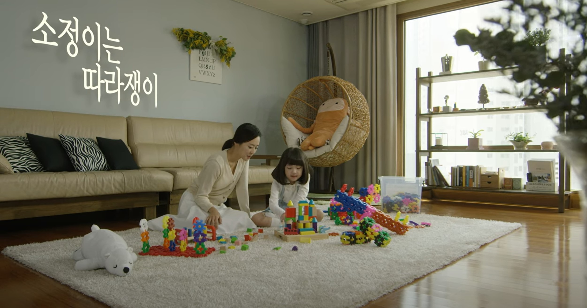

|
 |
 |  |
 |
생활 속 우월적 지위 남용 사례 공익광고 ①(31초) ‘을이 존중받아야 갑도 존중받을 수 있다’는 메시지에 대해 함께 생각해 볼 수 있는 계기 마련, 상호 배려의 중요성 확인 |
생활 속 우월적 지위 남용 사례 공익광고 ②(40초) ‘을이 존중받아야 갑도 존중받을 수 있다’는 메시지에 대해 함께 생각해 볼 수 있는 계기 마련, 상호 배려의 중요성 확인 |
생활 속 우월적 지위 남용 사례 공익광고 ③(50초) ‘을이 존중받아야 갑도 존중받을 수 있다’는 메시지에 대해 함께 생각해 볼 수 있는 계기 마련, 상호 배려의 중요성 확인 |
다양한 형태의 가족을 소개하며 가족에 대한 편견을 인식(2분 10초) 조손 가족, 한부모 가족, 입양가족 등 다양한 가족의 형태를 소개하며 가족에 대한 편견 개선 |
모욕죄의 성립요건과 모욕죄 사례(20분 33초) 모욕죄의 위험성과 다양한 사례 제시를 통해 바른 언어 사용의 필요성 인식 |